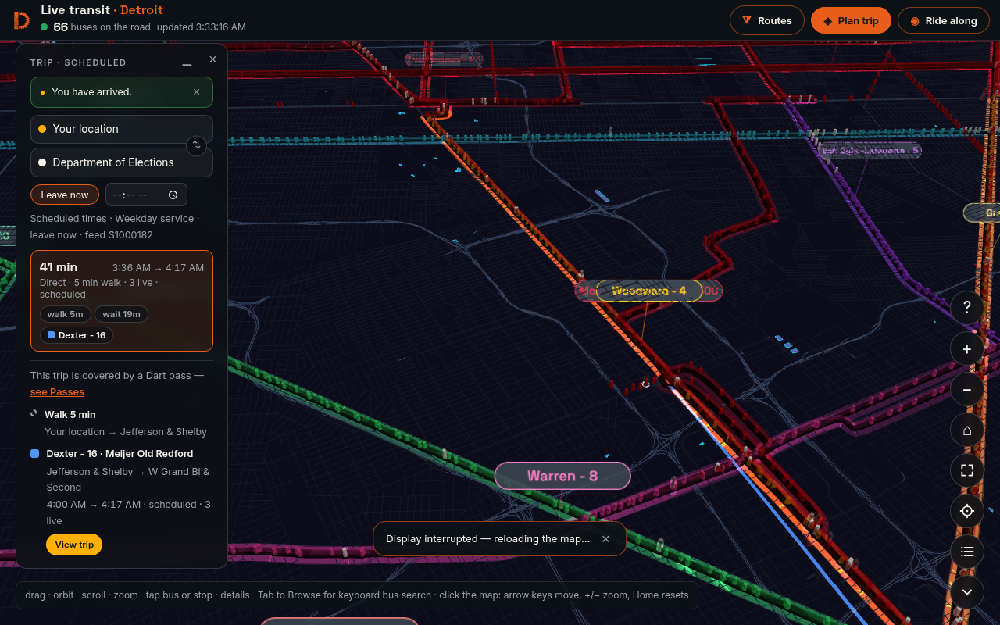
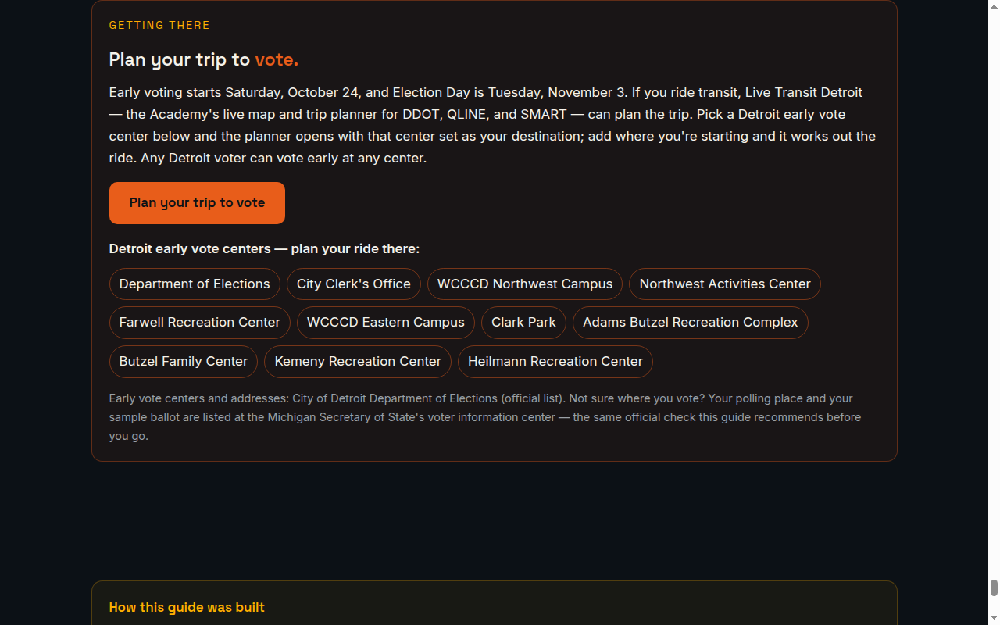

The Press · Media Kit
Media Kit
The fact sheet, brand assets, and product images a working journalist needs — in the same discipline as The Press: facts only, every fact traceable to a page already published on this site. Each section below names its source. Anything this site has not published is not stated here.
Media contact: justin@detroitautomationacademy.com — the address published on this site's homepage, Terms of Service, and Privacy Policy.
Fact sheet — the organization
- Organization
- Detroit Automation Academy
- Legal name
- AutomatedTechnologies d/b/a Detroit Automation Academy (the form used in the published Terms of Service and Privacy Policy, effective October 18, 2026)
- What it is
- “Robotics, drones, and automation training for Detroit's young builders — from first circuit to first career.” (the academy's own description, from its homepage)
- Based
- Southfield, Michigan
- Programs
- Four training tracks: Robotics Cohorts; Drones; Automation & IoT; Apple Code + Create (run with the Michigan Engineering Zone)
- Funding
- The academy states on its homepage: “This academy has never received institutional funding.” Its footer line reads: “Built without funding. Finished on principle.”
- Built alongside
- The homepage names, under “Built alongside Detroit's builders”: University of Michigan Center for Innovation; Qualcomm Thinkabit Lab; College for Creative Studies; Michigan Engineering Zone
Sources: homepage (description, programs, funding, partners, contact) · Terms of Service (legal name, §16 contact) · Privacy Policy (§8, published address).
Fact sheet — Live Transit Detroit
Live Transit Detroit is the academy's live transit map and trip planner for the Detroit region. Its page describes it in these terms: “every DDOT and SMART bus in the Detroit region tracked live in 3D. All 83 routes and 10,583 stops drawn on the real streets, plus the QLINE streetcar, with real-time vehicle positions refreshed every 60 seconds.”
Its own tagline: “Detroit students ride free; this is the map that finds their bus.”
Source: live-transit.html (page title, description, and open-graph description, as published).
Publications
The Signal
The academy's monthly transit newsletter — “the buses, the rails, the maps, and the people building them.” It relaunched as a transit newsletter on October 11, 2026. Archive: /signal/ · Sponsorship: /sponsor.html.
The Press — Just the Facts
Current reporting distilled to what can be verified: characterization, prediction, and unattributed assertion removed, every fact traceable to its source, with the method published on the page. /press/
The Detroit Voter Guide
In the guide's own description: “A nonpartisan, interactive voter guide for Detroit's November 3, 2026 general election: every race, every candidate, platforms, track records, and voting records — with sources.” /voter-guide.html
Detroit 2126
A series published on this site. Installment 1, “The Ride Is Free,” was published October 1, 2026. /signal/detroit-2126-01/
Sources: homepage (The Signal) · The Press (its method) · The Detroit Voter Guide (its published description) · Signal archive (Detroit 2126).
Brand assets
The site's own logo files, as served. Use them as provided — do not redraw or recolor them.
Primary mark (“Forge D”)
Download WebP

Horizontal lockup
Download SVG · Download PNG


Favicon / touch icon
favicon-32.png · apple-touch-icon.png


Site colors
The colors defined in this site's own stylesheet:
#E85D1A
#FFB000
#F5F2EA
#0C1116
#9AA0A6
Type
Space Grotesk for display type; Inter for text — the typefaces named in this site's stylesheet.
Sources: the asset files linked above, as served by this site · styles.css (color and typeface definitions).
Product images
Production captures of the live site, taken during the site's own verification runs. Right-click or use the download links to save the full-resolution files.




Also served by this site: the Live Transit Detroit social image (the product's open-graph image, JPG).

Sources: the site's own production captures (this page's files) · /assets/live-transit-og.jpg, as served.
Principal
Justin Spencer Smith — Lead Technologist, AutomatedTechnologies; builder of Live Transit Detroit and the Detroit Automation Academy.
“I build Detroit’s transit information layer — every bus, live, on one map — and I measure what the big apps miss.”
Route-count basis used in this kit and across the site: 83 routes estate-wide — 37 DDOT, 45 SMART, and the QLINE streetcar. The trip planner computes over the 82 DDOT + SMART routes; the QLINE is carried as live display and Ride Along, not as planner service.
Sources: homepage colophon · Live Transit Detroit (route composition) · personal-brand baseline record, 2026-10-21.
Media contact & corrections
Media contact: justin@detroitautomationacademy.com. This is the only contact address the site publishes — it appears on the homepage, in §16 of the Terms of Service, and in §8 of the Privacy Policy. The site publishes no press phone number.
Corrections: facts first, always sourced — the academy's standing rule, as stated on The Press. If a fact in this kit or anywhere on the site is wrong, write to justin@detroitautomationacademy.com. Corrections to The Press are handled under the method published on that page: facts only, attribution preserved, characterization removed, sources linked.
Sources: homepage (contact block) · Terms of Service §16 · Privacy Policy §8 · The Press (standing rule and method).